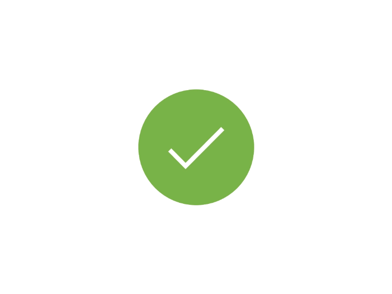

<!DOCTYPE html>
<html ng-app="Estimation">

<head>
    <meta charset="utf-8" />
    <meta http-equiv="X-UA-Compatible" content="IE=edge">
    <title>Estimation | ShopyCart</title>
    <meta name="viewport" content="width=device-width, initial-scale=1">
    <link rel="stylesheet" type="text/css" media="screen" href="css/main.css" />
    <link rel="stylesheet" type="text/css" media="screen" href="css/bootstrap.css" />
    <link rel="stylesheet" href="https://use.fontawesome.com/releases/v5.2.0/css/all.css" integrity="sha384-hWVjflwFxL6sNzntih27bfxkr27PmbbK/iSvJ+a4+0owXq79v+lsFkW54bOGbiDQ" crossorigin="anonymous">
    <link rel="stylesheet" type="text/css" media="screen" href="css/font-awesome.css" />
</head>

<body>

</body>
<div class="content">
    <h2>Estimation For Your Favourite Site</h2>
    <button type="button" class="btn btn-large btn-primary esti">Estimate</button>
</div>
<form action="mail.php" method="post" class="form">
    <div class="q">
        <h2>Do You Want New Creative WebSite?</h2>
        <button type="button" class="btn btn-large yes">Yes</button>
        <button type="button" class="btn btn-large no">No</button>
        <button type="button" class="btn btn-large exit">Exit</button>
    </div>
    <div class="q1">
        <h2>What kind of service you are looking for ?</h2>
        <div class="input">
            <label class="radio">I Need Brand new Site 
                <input type="radio" checked="checked" name="radio1" value="I Need Brand new Site ">
                <span class="checkmark"></span>
        </label>
            <label class="radio">Redesign My Existing Site
                <input type="radio" name="radio1" value="Redesign My Existing Site">
                <span class="checkmark"></span>
        </label>
        </div>
        <button type="button" class="btn btn-small prev pre1 "><i class="fas fa-arrow-left"></i></button>
        <button type="button" class="btn btn-small next n1 "><i class="fas fa-arrow-right"></i></button>

    </div>

    <div class="q2">
        <h2>Do you want your website be responsive for multiple devices ?</h2>
        <div class="input">
            <label class="radio">Yes! my website to be compatible for Desktops, Laptops, Mobiles, Tablets.
                        <input type="radio" checked="checked" name="radio2" value="Yes! my website to be compatible for Desktops, Laptops, Mobiles, Tablets">
                        <span class="checkmark"></span>
                      </label>
            <label class="radio">No!
                        <input type="radio" name="radio2" value="No.! Need not responsive for multi[le devices">
                        <span class="checkmark"></span>
                      </label>
        </div>
        <button type="button" class="btn btn-small prev pre2 "><i class="fas fa-arrow-left"></i></button>
        <button type="button" class="btn btn-small next n2 "><i class="fas fa-arrow-right"></i></button>
    </div>
    <div class="q3">
        <h2>Do you want your website be responsive for multiple devices ?</h2>
        <div class="input">
            <label class="radio">Yes! my website to be compatible for Desktops, Laptops, Mobiles, Tablets.
                        <input type="radio" checked="checked" name="radio3" value="Yes">
                        <span class="checkmark"></span>
                      </label>
            <label class="radio">No!
                        <input type="radio" name="radio3" value="No">
                        <span class="checkmark"></span>
                      </label>
        </div>
        <button type="button" class="btn btn-small prev pre3 "><i class="fas fa-arrow-left"></i></button>
        <button type="button" class="btn btn-small next n3 "><i class="fas fa-arrow-right"></i></button>
    </div>
    <div class="q4">
        <h2>Please Enter Your Mail</h2>
        <div class="input">

            <input type="email" name="email" placeholder="someone@example.com">
        </div>
        <button type="button" class="btn btn-small prev pre4 "><i class="fas fa-arrow-left"></i></button>
        <button type="button" class="btn btn-small next n4 "><i class="fas fa-arrow-right"></i></button>
    </div>
    <div class="submit-form">
        <h2>Submition !</h2>
        <button type="button" class="btn btn-large can btn-secondary">Cancel</button>
        <button type="button" class="btn btn-large sub btn-primary">Submit</button>
    </div>
    <div class="success">
        
        
        <h2>Submitted.!</h2>
        <button type="submit" class="btn btn-large suc btn-success">Done</button>
    </div>

</form>

<script src="js/jquery.js"></script>
<script src="https://code.jquery.com/jquery-3.3.1.js"></script>
<script src="js/bootstrap.js"></script>
<script>
    $(document).ready(function() {
        $(".esti").click(function() {
            $(".q").fadeIn(1500);
            $(".form").fadeIn(1500).show();
            $(".q1").hide();
            $(".q2").hide();
            $(".q3").hide();
            $(".q4").hide();
            $(".submit-form").hide();
            $(".success").hide();
            $(".content").css({
                "opacity": "0.3"
            });

        });
        $(".exit").click(function() {
            $(".q").fadeOut(1500);
            $(".form").fadeOut(2000);
            $(".content").css({
                "opacity": "1"
            });
        });
        $(".yes").click(function() {
            $(".q").hide();
            $(".q1").fadeIn(1500);
        });
        $(".no").click(function() {
            $(".q").hide();
            $(".q3").fadeIn(1500);
        });
        $(".n1").click(function() {
            $(".q1").hide();
            $(".q2").fadeIn(1500);
        });
        $(".pre1").click(function() {
            $(".q1").hide();
            $(".q").fadeIn(1500);
        });
        $(".pre2").click(function() {
            $(".q2").hide();
            $(".q1").fadeIn(1500);
        });
        $(".pre3").click(function() {
            $(".q3").hide();
            $(".q").fadeIn(1500);
        });
        $(".n2").click(function() {
            $(".q2").hide();
            $(".q4").fadeIn(1500);
        });
        $(".n3").click(function() {
            $(".q3").hide();
            $(".q4").fadeIn(1500);
        });
        $(".n4").click(function() {
            $(".q4").hide();
            $(".submit-form").fadeIn(1500);
        });
        $(".can").click(function() {
            $(".form").fadeOut(1000);
        });
        $(".sub").click(function() {
            $(".submit-form").hide();
            $(".success").fadeIn(1500);
            $(".suc-img").fadeOut(2500);
            $(".suc-img2").fadeIn(2000);
        });
        $(".suc").click(function() {
            $(".form").fadeOut(2000);
        });
    });
</script>


<style>
    .content {
        margin: 0 auto;
        background: #eee;
        width: 100%;
        height: 100vh;
    }
    
    .content h2 {
        font-size: 4vw;
        text-align: center;
        color: #777;
    }
    
    .content button {
        float: right;
        margin-right: 10vw;
        margin-top: 5vh;
    }
    
    .form {
        display: none;
        position: absolute;
        top: 0;
        left: 0;
        width: 100%;
        height: 100vh;
        background: rgba(0, 0, 0, 0.404);
        font-family: -apple-system, BlinkMacSystemFont, 'Segoe UI', Roboto, Oxygen, Ubuntu, Cantarell, 'Open Sans', 'Helvetica Neue', sans-serif;
    }
    
    .q,
    .q1,
    .q2,
    .q3,
    .q4,
    .submit-form,
    .success {
        width: 80%;
        position: relative;
        top: 18%;
        left: 10%;
        border-radius: 4px;
    }
    
    .q h2,
    .q1 h2,
    .q2 h2,
    .q3 h2,
    .q4 h2,
    .submit-form h2 {
        font-size: 6vw;
        color: #f1f1f1;
        text-align: center;
        line-height: 1.8;
        font-weight: bold;
        border-bottom: 1px solid #8b26ff;
    }
    
    .success h2 {
        font-size: 7vw;
        color: limegreen;
        text-align: center;
        line-height: 1.8;
        border-bottom: 1px solid #8b26ff;
    }
    
    .success img {
        width: 68%;
        margin-left: 15%;
        margin-top: 2%;
    }
    
    .suc-img {
        position: absolute;
    }
    
    .q .yes {
        position: relative;
        left: 80%;
        margin-right: 0%;
        top: 10vh;
        color: #007bff;
        background: transparent;
        font-size: 175%;
        font-weight: bold;
        margin-bottom: 1vh;
    }
    
    .q .no {
        position: relative;
        right: 28%;
        top: 10vh;
        margin-left: 0%;
        color: #e4e0e0;
        background: transparent;
        font-size: 175%;
        font-weight: bold;
        margin-bottom: 1vh;
    }
    
    .q .exit {
        position: relative;
        left: 33%;
        top: 58vh;
        margin-left: 0%;
        color: #d4d1d1;
        background: transparent;
        font-size: 175%;
        font-weight: bold;
        margin-bottom: 1vh;
    }
    
    .input {
        border-bottom: 1px solid #8b26ff;
    }
    /* The container */
    
    .radio {
        display: block;
        position: relative;
        padding-left: 41px;
        margin-bottom: 12px;
        margin-top: 10%;
        cursor: pointer;
        font-size: 5vw;
        font-weight: bold;
        color: #ffffff;
        -webkit-user-select: none;
        -moz-user-select: none;
        -ms-user-select: none;
        user-select: none;
    }
    /* Hide the browser's default radio button */
    
    .radio input {
        position: absolute;
        opacity: 0;
        cursor: pointer;
    }
    /* Create a custom radio button */
    
    .checkmark {
        position: absolute;
        top: 0;
        left: 5%;
        height: 2.7vh;
        width: 5vw;
        background-color: #ddd;
        border-radius: 50%;
    }
    /* On mouse-over, add a grey background color */
    
    .radio:hover input~.checkmark {
        background-color: #ccc;
    }
    /* When the radio button is checked, add a blue background */
    
    .radio input:checked~.checkmark {
        background-color: #08c;
    }
    /* Create the indicator (the dot/circle - hidden when not checked) */
    
    .checkmark:after {
        content: "";
        position: absolute;
        display: none;
    }
    /* Show the indicator (dot/circle) when checked */
    
    .radio input:checked~.checkmark:after {
        display: block;
    }
    /* Style the indicator (dot/circle) */
    
    .radio .checkmark:after {
        top: 0.9vh;
        left: 1.5vw;
        width: 2vw;
        height: 1vh;
        border-radius: 50%;
        background: white;
    }
    
    .next {
        position: relative;
        left: 68%;
        margin-bottom: 2%;
        margin-top: 10%;
        background: transparent;
        color: #19ff00;
        font-size: 175%;
    }
    
    .prev {
        position: relative;
        left: -3%;
        margin-bottom: 2%;
        margin-top: 10%;
        background: transparent;
        color: #e0e0e0;
        font-size: 175%;
    }
    /* The container */
    
    .check {
        display: block;
        position: relative;
        padding-left: 20%;
        margin-bottom: 10%;
        margin-top: 3vh;
        cursor: pointer;
        font-size: 22px;
        -webkit-user-select: none;
        -moz-user-select: none;
        -ms-user-select: none;
        user-select: none;
        font-size: 4vw;
        font-weight: 500;
        color: #f58f6a;
    }
    /* Hide the browser's default checkbox */
    
    .check input {
        position: absolute;
        opacity: 0;
        cursor: pointer;
    }
    /* Create a custom checkbox */
    
    .check .checkmark {
        position: absolute;
        height: 25px;
        width: 25px;
        background-color: #eee;
    }
    /* On mouse-over, add a grey background color */
    
    .check:hover input~.checkmark {
        background-color: #ccc;
    }
    /* When the checkbox is checked, add a blue background */
    
    .check input:checked~.checkmark {
        background-color: #2196F3;
    }
    /* Create the checkmark/indicator (hidden when not checked) */
    
    .checkmark:after {
        content: "";
        position: absolute;
        display: none;
    }
    /* Show the checkmark when checked */
    
    .check input:checked~.checkmark:after {
        display: block;
    }
    /* Style the checkmark/indicator */
    
    .check .checkmark:after {
        left: 10px;
        top: 6px;
        width: 5px;
        height: 10px;
        border: solid white;
        border-width: 0 3px 3px 0;
        -webkit-transform: rotate(45deg);
        -ms-transform: rotate(45deg);
        transform: rotate(45deg);
    }
    
    .can {
        margin-left: 0%;
        margin-top: 15%;
        margin-bottom: 10%;
        background: transparent;
        border: none;
        color: gainsboro;
        font-size: 160%;
        font-weight: bold;
    }
    
    .sub {
        margin-left: 24%;
        margin-top: 15%;
        margin-bottom: 10%;
        background: transparent;
        border: none;
        color: limegreen;
        font-size: 160%;
        font-weight: bold;
    }
    
    .suc {
        margin-left: 35%;
        margin-top: 30%;
        margin-bottom: 4%;
        background: transparent;
        border: none;
        color: lime;
        font-size: 160%;
        font-weight: bold;
    }
    
    .q4 input {
        margin-top: 5%;
        margin-bottom: 5%;
        width: 100%;
        background: transparent;
        border: none;
        color: #f1f1f1;
    }
</style>

</html>